#install.packages(c(
# "FactoMineR", # PCA y métodos multivariados
# "psych", # Análisis psicométrico (KMO, etc.)
# "corrplot", # Gráficos de correlación
# "PerformanceAnalytics" # Estadísticos financieros y correlaciones
#))
library(FactoMineR) # PCA y funciones de análisis factorial
library(dplyr) # Manipulación de datos
library(psych) # KMO, análisis psicométrico
library(corrplot) # Matriz de correlaciones graficadas
library(PerformanceAnalytics) # chart.CorrelationCapitulo_7_Analisis_Factorial
1 1. Material descargable
2 Recordatorio teórico: PCA y análisis factorial
A muy grandes rasgos, el Análisis de Componentes Principales (PCA) busca:
- Reducir un conjunto de p variables originales (X1, …, Xp) a un número menor de componentes (Z1, …, Zz), con z < p.
- Cada componente es una combinación lineal de las variables originales que captura la máxima varianza posible.
- Es un método de aprendizaje no supervisado: no hay variable respuesta, sólo interesa la estructura interna de las X.
Pasos habituales:
- Estandarizar las variables si están en escalas diferentes (media 0, desviación estándar 1).
- Calcular la matriz de correlación R.
- Obtener valores propios (lambda_i) y vectores propios (direcciones principales).
- Decidir cuántas componentes retener (porcentaje de varianza explicada, gráfico de sedimentación, criterio de Kaiser, etc.).
- Interpretar las componentes mirando las cargas (correlación variable–componente).
- Analizar gráficos de individuos y variables para comprender la estructura de los datos.
Además, se suele evaluar:
- Test de Bartlett: contrasta si la matriz de correlación es suficientemente distinta de la identidad (si es esférica, PCA no tiene mucho sentido).
- KMO: mide la adecuación muestral (valores altos indican que es apropiado usar análisis factorial/PCA).
3 Configuración inicial en R
3.1 Carga de librerías
3.2 Ruta de trabajo
Usaremos la ruta estándar de tus labs:
ruta_datos <- "C:/Users/manue/Desktop/lab-econometria/labs_epg/data_epg"
list.files(ruta_datos) [1] "annos_mantenimiento.xlsx" "auto_peso_consumo.xlsx"
[3] "costos.xlsx" "data_PCA_Decathlon.csv"
[5] "data_PCA_ExpertWine.csv" "Ejemplo1.xlsx"
[7] "Ejemplo2.xlsx" "millaje.txt"
[9] "orange.csv" "tabla_ejemplo_R.xlsx" 4 Parte 1: PCA con datos de Decathlon
En el primer ejercicio analizaremos resultados de atletas en un decathlon.
- Cada fila: un atleta.
- Columnas 1 a 10: variables cuantitativas de desempeño (distancias, tiempos, puntajes).
- Otras columnas: información complementaria (competición, ranking, etc.).
4.1 Importar datos de Decathlon
En el script original se usa un archivo CSV con ; como separador:
archivo_decathlon <- file.path(ruta_datos, "data_PCA_Decathlon.csv")
decathlon <- read.table(
archivo_decathlon,
header = TRUE,
sep = ";",
dec = ".",
row.names = 1,
check.names = FALSE
)
summary(decathlon) 100m Long jump Shot put High jump 400m
Min. :10.44 Min. :6.61 Min. :12.68 Min. :1.850 Min. :46.81
1st Qu.:10.85 1st Qu.:7.03 1st Qu.:13.88 1st Qu.:1.920 1st Qu.:48.93
Median :10.98 Median :7.30 Median :14.57 Median :1.950 Median :49.40
Mean :11.00 Mean :7.26 Mean :14.48 Mean :1.977 Mean :49.62
3rd Qu.:11.14 3rd Qu.:7.48 3rd Qu.:14.97 3rd Qu.:2.040 3rd Qu.:50.30
Max. :11.64 Max. :7.96 Max. :16.36 Max. :2.150 Max. :53.20
110m H Discus Pole vault Javeline
Min. :13.97 Min. :37.92 Min. :4.200 Min. :50.31
1st Qu.:14.21 1st Qu.:41.90 1st Qu.:4.500 1st Qu.:55.27
Median :14.48 Median :44.41 Median :4.800 Median :58.36
Mean :14.61 Mean :44.33 Mean :4.762 Mean :58.32
3rd Qu.:14.98 3rd Qu.:46.07 3rd Qu.:4.920 3rd Qu.:60.89
Max. :15.67 Max. :51.65 Max. :5.400 Max. :70.52
1500m Rank Points Competition
Min. :262.1 Min. : 1.00 Min. :7313 Length:41
1st Qu.:271.0 1st Qu.: 6.00 1st Qu.:7802 Class :character
Median :278.1 Median :11.00 Median :8021 Mode :character
Mean :279.0 Mean :12.12 Mean :8005
3rd Qu.:285.1 3rd Qu.:18.00 3rd Qu.:8122
Max. :317.0 Max. :28.00 Max. :8893
Tip
Observa:
- Número de individuos (atletas).
- Número de variables cuantitativas activas (primeras 10 columnas).
- Variables adicionales (competición, ranking, etc.) que luego usaremos como suplementarias.
4.2 Estandarización manual (opcional)
El PCA de FactoMineR::PCA ya estandariza por defecto las variables cuantitativas, pero el script muestra cómo hacerlo explícitamente:
decathlonnorm <- decathlon[, 1:10] %>%
mutate_all(~ scale(.) %>% as.vector)
head(decathlonnorm) 100m Long jump Shot put High jump 400m 110m H
Sebrle -0.5628739 1.8331131 2.283919585 1.60955474 -1.0892025 -1.17818270
Clay -2.1216730 2.2123779 0.913271989 0.93502243 -0.3696226 -1.00861538
Karpov -1.8935560 1.7382969 1.762345721 1.27228858 -2.4329962 -1.34775002
Macey -0.4107959 0.6637134 1.519753226 1.94682089 -0.5603546 -0.09719103
Warners -1.4373221 1.5170591 0.003550134 -0.07677604 -1.4273183 -1.26296636
Zsivoczky -0.3347570 -0.3792648 1.010308987 1.60955474 -0.1875602 0.72944966
Discus Pole vault Javeline 1500m
Sebrle 1.3009450 0.8545364 2.52825135 0.08439142
Clay 1.7124500 0.4948240 2.36043901 0.25486670
Karpov 2.1683620 -0.5843134 -0.57524110 -0.07837391
Macey 1.1884472 -1.3037383 0.02971203 -1.16547502
Warners -0.1763283 0.4948240 -0.60631746 -0.08351387
Zsivoczky 0.3832000 -0.2246009 1.06351893 -0.812531244.3 Matriz de correlación
Antes de hacer PCA, miramos las correlaciones entre variables:
cor.mat <- round(cor(decathlon[, 1:10]), 2)
cor.mat 100m Long jump Shot put High jump 400m 110m H Discus Pole vault
100m 1.00 -0.60 -0.36 -0.25 0.52 0.58 -0.22 -0.08
Long jump -0.60 1.00 0.18 0.29 -0.60 -0.51 0.19 0.20
Shot put -0.36 0.18 1.00 0.49 -0.14 -0.25 0.62 0.06
High jump -0.25 0.29 0.49 1.00 -0.19 -0.28 0.37 -0.16
400m 0.52 -0.60 -0.14 -0.19 1.00 0.55 -0.12 -0.08
110m H 0.58 -0.51 -0.25 -0.28 0.55 1.00 -0.33 0.00
Discus -0.22 0.19 0.62 0.37 -0.12 -0.33 1.00 -0.15
Pole vault -0.08 0.20 0.06 -0.16 -0.08 0.00 -0.15 1.00
Javeline -0.16 0.12 0.37 0.17 0.00 0.01 0.16 -0.03
1500m -0.06 -0.03 0.12 -0.04 0.41 0.04 0.26 0.25
Javeline 1500m
100m -0.16 -0.06
Long jump 0.12 -0.03
Shot put 0.37 0.12
High jump 0.17 -0.04
400m 0.00 0.41
110m H 0.01 0.04
Discus 0.16 0.26
Pole vault -0.03 0.25
Javeline 1.00 -0.18
1500m -0.18 1.00corrplot(
cor.mat,
type = "upper",
order = "hclust",
tl.col = "black",
tl.srt = 45
)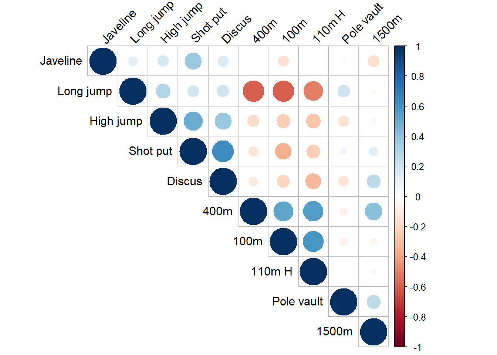
chart.Correlation(decathlon[, 1:10],
histogram = TRUE,
pch = 19)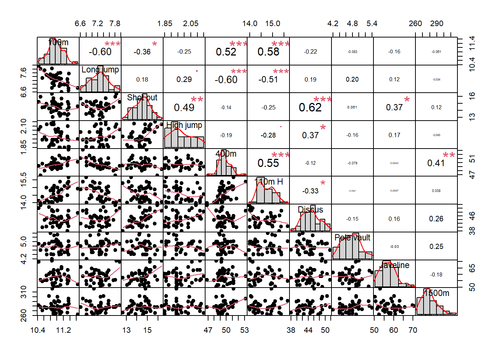
Nota
- Correlaciones altas (en valor absoluto) entre variables sugieren redundancia de información, lo que hace atractivo aplicar PCA.
corrplotagrupa visualmente las variables con patrones de correlación similares.
4.4 PCA con variables activas (primeras 10 columnas)
res <- PCA(decathlon[, 1:10], ncp = 5)
summary.PCA(res)
Call:
PCA(X = decathlon[, 1:10], ncp = 5)
Eigenvalues
Dim.1 Dim.2 Dim.3 Dim.4 Dim.5 Dim.6 Dim.7
Variance 3.272 1.737 1.405 1.057 0.685 0.599 0.451
% of var. 32.719 17.371 14.049 10.569 6.848 5.993 4.512
Cumulative % of var. 32.719 50.090 64.140 74.708 81.556 87.548 92.061
Dim.8 Dim.9 Dim.10
Variance 0.397 0.215 0.182
% of var. 3.969 2.148 1.822
Cumulative % of var. 96.030 98.178 100.000
Individuals (the 10 first)
Dist Dim.1 ctr cos2 Dim.2 ctr cos2 Dim.3
Sebrle | 4.843 | 4.038 12.158 0.695 | 1.366 2.619 0.080 | -0.290
Clay | 4.647 | 3.919 11.451 0.711 | 0.837 0.984 0.032 | 0.231
Karpov | 5.006 | 4.620 15.911 0.852 | 0.040 0.002 0.000 | -0.042
Macey | 3.434 | 2.233 3.719 0.423 | 1.042 1.524 0.092 | -1.864
Warners | 2.979 | 2.168 3.505 0.530 | -1.803 4.565 0.366 | 0.851
Zsivoczky | 2.566 | 0.925 0.638 0.130 | 1.169 1.918 0.207 | -1.477
Hernu | 1.824 | 0.889 0.589 0.238 | -0.618 0.537 0.115 | -0.898
Nool | 3.098 | 0.295 0.065 0.009 | -1.546 3.354 0.249 | 1.355
Bernard | 2.827 | 1.906 2.709 0.455 | -0.086 0.010 0.001 | -0.757
Schwarzl | 1.971 | 0.081 0.005 0.002 | -1.353 2.572 0.472 | 0.822
ctr cos2
Sebrle 0.146 0.004 |
Clay 0.093 0.002 |
Karpov 0.003 0.000 |
Macey 6.034 0.295 |
Warners 1.257 0.082 |
Zsivoczky 3.790 0.332 |
Hernu 1.401 0.242 |
Nool 3.189 0.191 |
Bernard 0.995 0.072 |
Schwarzl 1.174 0.174 |
Variables
Dim.1 ctr cos2 Dim.2 ctr cos2 Dim.3 ctr cos2
100m | -0.775 18.344 0.600 | 0.187 2.016 0.035 | -0.184 2.420 0.034
Long jump | 0.742 16.822 0.550 | -0.345 6.869 0.119 | 0.182 2.363 0.033
Shot put | 0.623 11.844 0.388 | 0.598 20.607 0.358 | -0.023 0.039 0.001
High jump | 0.572 9.998 0.327 | 0.350 7.064 0.123 | -0.260 4.794 0.067
400m | -0.680 14.116 0.462 | 0.569 18.666 0.324 | 0.131 1.230 0.017
110m H | -0.746 17.020 0.557 | 0.229 3.013 0.052 | -0.093 0.611 0.009
Discus | 0.552 9.328 0.305 | 0.606 21.162 0.368 | 0.043 0.131 0.002
Pole vault | 0.050 0.077 0.003 | -0.180 1.873 0.033 | 0.692 34.061 0.479
Javeline | 0.277 2.347 0.077 | 0.317 5.784 0.100 | -0.390 10.807 0.152
1500m | -0.058 0.103 0.003 | 0.474 12.946 0.225 | 0.782 43.543 0.612
100m |
Long jump |
Shot put |
High jump |
400m |
110m H |
Discus |
Pole vault |
Javeline |
1500m |print(res)**Results for the Principal Component Analysis (PCA)**
The analysis was performed on 41 individuals, described by 10 variables
*The results are available in the following objects:
name description
1 "$eig" "eigenvalues"
2 "$var" "results for the variables"
3 "$var$coord" "coord. for the variables"
4 "$var$cor" "correlations variables - dimensions"
5 "$var$cos2" "cos2 for the variables"
6 "$var$contrib" "contributions of the variables"
7 "$ind" "results for the individuals"
8 "$ind$coord" "coord. for the individuals"
9 "$ind$cos2" "cos2 for the individuals"
10 "$ind$contrib" "contributions of the individuals"
11 "$call" "summary statistics"
12 "$call$centre" "mean of the variables"
13 "$call$ecart.type" "standard error of the variables"
14 "$call$row.w" "weights for the individuals"
15 "$call$col.w" "weights for the variables" Aquí usamos sólo las variables activas (sin incluir todavía variables suplementarias).
4.4.1 Adecuación del análisis factorial: Bartlett y KMO
bartlett.test(decathlon[, 1:10])
Bartlett test of homogeneity of variances
data: decathlon[, 1:10]
Bartlett's K-squared = 1268.8, df = 9, p-value < 2.2e-16KMO(decathlon[, 1:10])Kaiser-Meyer-Olkin factor adequacy
Call: KMO(r = decathlon[, 1:10])
Overall MSA = 0.6
MSA for each item =
100m Long jump Shot put High jump 400m 110m H Discus
0.69 0.72 0.57 0.70 0.61 0.83 0.54
Pole vault Javeline 1500m
0.24 0.44 0.29
Nota
- Un p-value pequeño en Bartlett indica que la matriz de correlaciones no es esférica, por lo que PCA tiene sentido.
- KMO cercano a 1 indica buena adecuación; valores muy bajos desaconsejan el análisis factorial.
4.5 PCA con variables suplementarias
Supongamos que las columnas 11 y 12 son cuantitativas suplementarias (no influyen en la construcción de las componentes) y la 13 es una cualitativa suplementaria (por ejemplo, tipo de competición).
res <- PCA(
decathlon,
ncp = 5,
quanti.sup = 11:12,
quali.sup = 13
)
summary(res, nbelements = Inf)
Call:
PCA(X = decathlon, ncp = 5, quanti.sup = 11:12, quali.sup = 13)
Eigenvalues
Dim.1 Dim.2 Dim.3 Dim.4 Dim.5 Dim.6 Dim.7
Variance 3.272 1.737 1.405 1.057 0.685 0.599 0.451
% of var. 32.719 17.371 14.049 10.569 6.848 5.993 4.512
Cumulative % of var. 32.719 50.090 64.140 74.708 81.556 87.548 92.061
Dim.8 Dim.9 Dim.10
Variance 0.397 0.215 0.182
% of var. 3.969 2.148 1.822
Cumulative % of var. 96.030 98.178 100.000
Individuals
Dist Dim.1 ctr cos2 Dim.2 ctr cos2 Dim.3
Sebrle | 4.843 | 4.038 12.158 0.695 | 1.366 2.619 0.080 | -0.290
Clay | 4.647 | 3.919 11.451 0.711 | 0.837 0.984 0.032 | 0.231
Karpov | 5.006 | 4.620 15.911 0.852 | 0.040 0.002 0.000 | -0.042
Macey | 3.434 | 2.233 3.719 0.423 | 1.042 1.524 0.092 | -1.864
Warners | 2.979 | 2.168 3.505 0.530 | -1.803 4.565 0.366 | 0.851
Zsivoczky | 2.566 | 0.925 0.638 0.130 | 1.169 1.918 0.207 | -1.477
Hernu | 1.824 | 0.889 0.589 0.238 | -0.618 0.537 0.115 | -0.898
Nool | 3.098 | 0.295 0.065 0.009 | -1.546 3.354 0.249 | 1.355
Bernard | 2.827 | 1.906 2.709 0.455 | -0.086 0.010 0.001 | -0.757
Schwarzl | 1.971 | 0.081 0.005 0.002 | -1.353 2.572 0.472 | 0.822
Pogorelov | 2.383 | 0.540 0.217 0.051 | 0.771 0.834 0.105 | 1.348
Schoenbeck | 1.797 | 0.114 0.010 0.004 | -0.040 0.002 0.000 | 0.740
Barras | 2.224 | 0.002 0.000 0.000 | 0.360 0.182 0.026 | -1.570
Smith | 3.536 | 0.870 0.565 0.061 | 1.059 1.576 0.090 | -1.643
Averyanov | 2.521 | 0.349 0.091 0.019 | -1.559 3.411 0.382 | 0.283
Ojaniemi | 2.338 | 0.380 0.108 0.026 | -0.772 0.838 0.109 | -0.371
Smirnov | 2.021 | -0.485 0.175 0.057 | -1.061 1.580 0.275 | -1.228
Qi | 1.764 | -0.434 0.141 0.061 | -0.326 0.149 0.034 | -1.070
Drews | 3.423 | -0.249 0.046 0.005 | -3.082 13.334 0.811 | 1.055
Parkhomenko | 3.486 | -1.069 0.853 0.094 | 2.093 6.152 0.361 | -1.000
Terek | 3.282 | -0.682 0.347 0.043 | 0.536 0.403 0.027 | 2.209
Gomez | 2.613 | -0.290 0.063 0.012 | -1.197 2.011 0.210 | -1.306
Turi | 3.069 | -1.542 1.772 0.252 | 0.427 0.256 0.019 | 0.514
Lorenzo | 3.510 | -2.409 4.324 0.471 | -1.583 3.518 0.203 | -1.502
Karlivans | 2.704 | -1.994 2.965 0.544 | -0.294 0.122 0.012 | -0.343
Korkizoglou | 3.975 | -0.958 0.684 0.058 | 2.066 5.995 0.270 | 2.587
Uldal | 2.946 | -2.562 4.894 0.757 | 0.245 0.085 0.007 | -0.419
Casarsa | 4.921 | -2.857 6.085 0.337 | 3.798 20.252 0.596 | 0.031
SEBRLE | 2.369 | 0.792 0.467 0.112 | 0.772 0.836 0.106 | 0.827
CLAY | 3.507 | 1.235 1.137 0.124 | 0.575 0.464 0.027 | 2.141
KARPOV | 3.396 | 1.358 1.375 0.160 | 0.484 0.329 0.020 | 1.956
BERNARD | 2.763 | -0.610 0.277 0.049 | -0.875 1.074 0.100 | 0.890
YURKOV | 3.018 | -0.586 0.256 0.038 | 2.131 6.376 0.499 | -1.225
WARNERS | 2.428 | 0.357 0.095 0.022 | -1.685 3.986 0.482 | 0.767
ZSIVOCZKY | 2.563 | 0.272 0.055 0.011 | -1.094 1.680 0.182 | -1.283
McMULLEN | 2.561 | 0.588 0.257 0.053 | 0.231 0.075 0.008 | -0.418
MARTINEAU | 3.742 | -1.995 2.968 0.284 | 0.561 0.442 0.022 | -0.730
HERNU | 2.794 | -1.546 1.782 0.306 | 0.488 0.335 0.031 | 0.841
BARRAS | 1.952 | -1.342 1.342 0.472 | -0.311 0.136 0.025 | 0.000
NOOL | 3.734 | -2.345 4.099 0.394 | -1.966 5.429 0.277 | -1.336
BOURGUIGNON | 4.299 | -3.979 11.802 0.857 | 0.200 0.056 0.002 | 1.326
ctr cos2
Sebrle 0.146 0.004 |
Clay 0.093 0.002 |
Karpov 0.003 0.000 |
Macey 6.034 0.295 |
Warners 1.257 0.082 |
Zsivoczky 3.790 0.332 |
Hernu 1.401 0.242 |
Nool 3.189 0.191 |
Bernard 0.995 0.072 |
Schwarzl 1.174 0.174 |
Pogorelov 3.153 0.320 |
Schoenbeck 0.952 0.170 |
Barras 4.278 0.498 |
Smith 4.689 0.216 |
Averyanov 0.139 0.013 |
Ojaniemi 0.239 0.025 |
Smirnov 2.619 0.369 |
Qi 1.987 0.368 |
Drews 1.932 0.095 |
Parkhomenko 1.736 0.082 |
Terek 8.472 0.453 |
Gomez 2.962 0.250 |
Turi 0.459 0.028 |
Lorenzo 3.918 0.183 |
Karlivans 0.204 0.016 |
Korkizoglou 11.615 0.423 |
Uldal 0.305 0.020 |
Casarsa 0.002 0.000 |
SEBRLE 1.187 0.122 |
CLAY 7.960 0.373 |
KARPOV 6.644 0.332 |
BERNARD 1.375 0.104 |
YURKOV 2.606 0.165 |
WARNERS 1.020 0.100 |
ZSIVOCZKY 2.857 0.250 |
McMULLEN 0.303 0.027 |
MARTINEAU 0.925 0.038 |
HERNU 1.227 0.091 |
BARRAS 0.000 0.000 |
NOOL 3.101 0.128 |
BOURGUIGNON 3.055 0.095 |
Variables
Dim.1 ctr cos2 Dim.2 ctr cos2 Dim.3 ctr
100m | -0.775 18.344 0.600 | 0.187 2.016 0.035 | -0.184 2.420
Long jump | 0.742 16.822 0.550 | -0.345 6.869 0.119 | 0.182 2.363
Shot put | 0.623 11.844 0.388 | 0.598 20.607 0.358 | -0.023 0.039
High jump | 0.572 9.998 0.327 | 0.350 7.064 0.123 | -0.260 4.794
400m | -0.680 14.116 0.462 | 0.569 18.666 0.324 | 0.131 1.230
110m H | -0.746 17.020 0.557 | 0.229 3.013 0.052 | -0.093 0.611
Discus | 0.552 9.328 0.305 | 0.606 21.162 0.368 | 0.043 0.131
Pole vault | 0.050 0.077 0.003 | -0.180 1.873 0.033 | 0.692 34.061
Javeline | 0.277 2.347 0.077 | 0.317 5.784 0.100 | -0.390 10.807
1500m | -0.058 0.103 0.003 | 0.474 12.946 0.225 | 0.782 43.543
cos2
100m 0.034 |
Long jump 0.033 |
Shot put 0.001 |
High jump 0.067 |
400m 0.017 |
110m H 0.009 |
Discus 0.002 |
Pole vault 0.479 |
Javeline 0.152 |
1500m 0.612 |
Supplementary continuous variables
Dim.1 cos2 Dim.2 cos2 Dim.3 cos2
Rank | -0.671 0.450 | 0.051 0.003 | -0.058 0.003 |
Points | 0.956 0.914 | -0.017 0.000 | -0.066 0.004 |
Supplementary categories
Dist Dim.1 cos2 v.test Dim.2 cos2 v.test Dim.3
Decastar | 0.946 | -0.600 0.403 -1.430 | -0.038 0.002 -0.123 | 0.289
OlympicG | 0.439 | 0.279 0.403 1.430 | 0.017 0.002 0.123 | -0.134
cos2 v.test
Decastar 0.093 1.050 |
OlympicG 0.093 -1.050 |print(res)**Results for the Principal Component Analysis (PCA)**
The analysis was performed on 41 individuals, described by 13 variables
*The results are available in the following objects:
name
1 "$eig"
2 "$var"
3 "$var$coord"
4 "$var$cor"
5 "$var$cos2"
6 "$var$contrib"
7 "$ind"
8 "$ind$coord"
9 "$ind$cos2"
10 "$ind$contrib"
11 "$quanti.sup"
12 "$quanti.sup$coord"
13 "$quanti.sup$cor"
14 "$quali.sup"
15 "$quali.sup$coord"
16 "$quali.sup$v.test"
17 "$call"
18 "$call$centre"
19 "$call$ecart.type"
20 "$call$row.w"
21 "$call$col.w"
description
1 "eigenvalues"
2 "results for the variables"
3 "coord. for the variables"
4 "correlations variables - dimensions"
5 "cos2 for the variables"
6 "contributions of the variables"
7 "results for the individuals"
8 "coord. for the individuals"
9 "cos2 for the individuals"
10 "contributions of the individuals"
11 "results for the supplementary quantitative variables"
12 "coord. for the supplementary quantitative variables"
13 "correlations suppl. quantitative variables - dimensions"
14 "results for the supplementary categorical variables"
15 "coord. for the supplementary categories"
16 "v-test of the supplementary categories"
17 "summary statistics"
18 "mean of the variables"
19 "standard error of the variables"
20 "weights for the individuals"
21 "weights for the variables" 4.5.1 Valores propios y varianza explicada
eigenvalues <- res$eig
eigenvalues[, 1:3] eigenvalue percentage of variance cumulative percentage of variance
comp 1 3.2719055 32.719055 32.71906
comp 2 1.7371310 17.371310 50.09037
comp 3 1.4049167 14.049167 64.13953
comp 4 1.0568504 10.568504 74.70804
comp 5 0.6847735 6.847735 81.55577
comp 6 0.5992687 5.992687 87.54846
comp 7 0.4512353 4.512353 92.06081
comp 8 0.3968766 3.968766 96.02958
comp 9 0.2148149 2.148149 98.17773
comp 10 0.1822275 1.822275 100.00000barplot(
eigenvalues[, 2],
names.arg = 1:nrow(eigenvalues),
main = "Porcentaje de varianza explicada",
xlab = "Componentes principales",
ylab = "Porcentaje de varianza",
col = "steelblue"
)
lines(x = 1:nrow(eigenvalues),
y = eigenvalues[, 2],
type = "b",
pch = 19,
col = "red")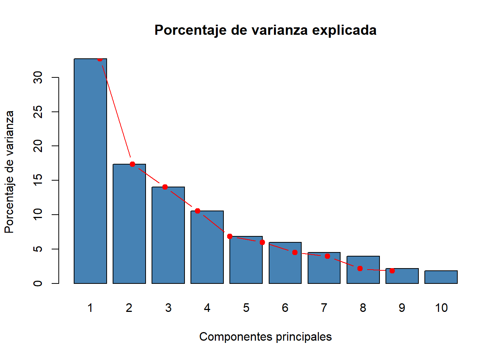
Tip
- La primera columna son los valores propios (lambda_i).
- La segunda columna es el porcentaje de varianza explicada.
- Fíjate cuántas componentes necesitas para explicar, por ejemplo, el 70%–80% de la varianza.
4.6 Descripción de las dimensiones
dimdesc ayuda a interpretar cada componente, relacionándola con las variables originales:
dimdesc(res)$Dim.1
Link between the variable and the continuous variables (R-square)
=================================================================================
correlation p.value
Points 0.9561543 2.099191e-22
Long jump 0.7418997 2.849886e-08
Shot put 0.6225026 1.388321e-05
High jump 0.5719453 9.362285e-05
Discus 0.5524665 1.802220e-04
Rank -0.6705104 1.616348e-06
400m -0.6796099 1.028175e-06
110m H -0.7462453 2.136962e-08
100m -0.7747198 2.778467e-09
$Dim.2
Link between the variable and the continuous variables (R-square)
=================================================================================
correlation p.value
Discus 0.6063134 2.650745e-05
Shot put 0.5983033 3.603567e-05
400m 0.5694378 1.020941e-04
1500m 0.4742238 1.734405e-03
High jump 0.3502936 2.475025e-02
Javeline 0.3169891 4.344974e-02
Long jump -0.3454213 2.696969e-02
$Dim.3
Link between the variable and the continuous variables (R-square)
=================================================================================
correlation p.value
1500m 0.7821428 1.554450e-09
Pole vault 0.6917567 5.480172e-07
Javeline -0.3896554 1.179331e-02dimdesc(res, axes = c(1, 2, 3, 4, 5))$Dim.1
Link between the variable and the continuous variables (R-square)
=================================================================================
correlation p.value
Points 0.9561543 2.099191e-22
Long jump 0.7418997 2.849886e-08
Shot put 0.6225026 1.388321e-05
High jump 0.5719453 9.362285e-05
Discus 0.5524665 1.802220e-04
Rank -0.6705104 1.616348e-06
400m -0.6796099 1.028175e-06
110m H -0.7462453 2.136962e-08
100m -0.7747198 2.778467e-09
$Dim.2
Link between the variable and the continuous variables (R-square)
=================================================================================
correlation p.value
Discus 0.6063134 2.650745e-05
Shot put 0.5983033 3.603567e-05
400m 0.5694378 1.020941e-04
1500m 0.4742238 1.734405e-03
High jump 0.3502936 2.475025e-02
Javeline 0.3169891 4.344974e-02
Long jump -0.3454213 2.696969e-02
$Dim.3
Link between the variable and the continuous variables (R-square)
=================================================================================
correlation p.value
1500m 0.7821428 1.554450e-09
Pole vault 0.6917567 5.480172e-07
Javeline -0.3896554 1.179331e-02
$Dim.4
Link between the variable and the continuous variables (R-square)
=================================================================================
correlation p.value
Javeline 0.7122773 1.761578e-07
Pole vault 0.5515340 1.857748e-04
$Dim.5
Link between the variable and the continuous variables (R-square)
=================================================================================
correlation p.value
High jump 0.5554396 0.0001635051
Pole vault 0.3299593 0.0351316637
Rank -0.3500257 0.0248682140
Link between the variable and the categorical variable (1-way anova)
=============================================
R2 p.value
Competition 0.1092271 0.0348183
Link between variable and the categories of the categorical variables
================================================================
Estimate p.value
Competition=Decastar 0.2938609 0.0348183
Competition=OlympicG -0.2938609 0.0348183dimdesc(res, proba = 0.2)$Dim.1
Link between the variable and the continuous variables (R-square)
=================================================================================
correlation p.value
Points 0.9561543 2.099191e-22
Long jump 0.7418997 2.849886e-08
Shot put 0.6225026 1.388321e-05
High jump 0.5719453 9.362285e-05
Discus 0.5524665 1.802220e-04
Javeline 0.2771108 7.942460e-02
Rank -0.6705104 1.616348e-06
400m -0.6796099 1.028175e-06
110m H -0.7462453 2.136962e-08
100m -0.7747198 2.778467e-09
Link between the variable and the categorical variable (1-way anova)
=============================================
R2 p.value
Competition 0.05110487 0.1552515
Link between variable and the categories of the categorical variables
================================================================
Estimate p.value
Competition=OlympicG 0.4393744 0.1552515
Competition=Decastar -0.4393744 0.1552515
$Dim.2
Link between the variable and the continuous variables (R-square)
=================================================================================
correlation p.value
Discus 0.6063134 2.650745e-05
Shot put 0.5983033 3.603567e-05
400m 0.5694378 1.020941e-04
1500m 0.4742238 1.734405e-03
High jump 0.3502936 2.475025e-02
Javeline 0.3169891 4.344974e-02
110m H 0.2287933 1.501925e-01
Long jump -0.3454213 2.696969e-02
$Dim.3
Link between the variable and the continuous variables (R-square)
=================================================================================
correlation p.value
1500m 0.7821428 1.554450e-09
Pole vault 0.6917567 5.480172e-07
High jump -0.2595119 1.013160e-01
Javeline -0.3896554 1.179331e-024.7 Coordenadas, cos2 y contribuciones de las variables
# Coordenadas de las variables
res$var$coord Dim.1 Dim.2 Dim.3 Dim.4 Dim.5
100m -0.77471983 0.1871420 -0.18440714 -0.03781826 0.30219639
Long jump 0.74189974 -0.3454213 0.18221105 0.10178564 0.03667805
Shot put 0.62250255 0.5983033 -0.02337844 0.19059161 0.11115082
High jump 0.57194530 0.3502936 -0.25951193 -0.13559420 0.55543957
400m -0.67960994 0.5694378 0.13146970 0.02930198 -0.08769157
110m H -0.74624532 0.2287933 -0.09263738 0.29083103 0.16432095
Discus 0.55246652 0.6063134 0.04295225 -0.25967143 -0.10482712
Pole vault 0.05034151 -0.1803569 0.69175665 0.55153397 0.32995932
Javeline 0.27711085 0.3169891 -0.38965541 0.71227728 -0.30512892
1500m -0.05807706 0.4742238 0.78214280 -0.16108904 -0.15356189# Calidad de representación (cos2)
res$var$cos2 Dim.1 Dim.2 Dim.3 Dim.4 Dim.5
100m 0.600190812 0.03502213 0.0340059930 0.0014302206 0.091322660
Long jump 0.550415232 0.11931587 0.0332008675 0.0103603165 0.001345279
Shot put 0.387509426 0.35796686 0.0005465513 0.0363251605 0.012354505
High jump 0.327121422 0.12270561 0.0673464410 0.0183857880 0.308513117
400m 0.461869674 0.32425938 0.0172842817 0.0008586058 0.007689811
110m H 0.556882084 0.05234639 0.0085816841 0.0845826853 0.027001375
Discus 0.305219255 0.36761593 0.0018448960 0.0674292539 0.010988725
Pole vault 0.002534268 0.03252860 0.4785272696 0.3041897208 0.108873151
Javeline 0.076790421 0.10048206 0.1518313365 0.5073389244 0.093103658
1500m 0.003372945 0.22488818 0.6117473613 0.0259496775 0.023581254# Contribuciones (en %)
res$var$contrib Dim.1 Dim.2 Dim.3 Dim.4 Dim.5
100m 18.34376957 2.016090 2.42049891 0.13532858 13.336184
Long jump 16.82246707 6.868559 2.36319121 0.98030118 0.196456
Shot put 11.84353954 20.606785 0.03890276 3.43711486 1.804174
High jump 9.99788710 7.063694 4.79362526 1.73967752 45.053306
400m 14.11622887 18.666374 1.23027094 0.08124195 1.122971
110m H 17.02011495 3.013382 0.61083225 8.00327927 3.943110
Discus 9.32848615 21.162245 0.13131711 6.38020830 1.604724
Pole vault 0.07745541 1.872547 34.06090024 28.78266727 15.899147
Javeline 2.34696326 5.784369 10.80714169 48.00480246 13.596270
1500m 0.10308808 12.945954 43.54331962 2.45537861 3.4436574.7.1 Gráfico de variables
plot(res, choix = "var", title = "Variables - componentes 1 y 2", axes = 1:2)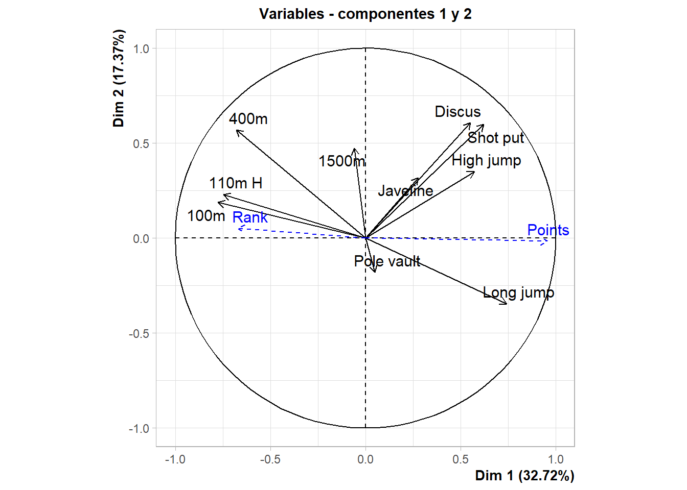
plot(res, choix = "var", title = "Variables - componentes 3 y 4", axes = 3:4)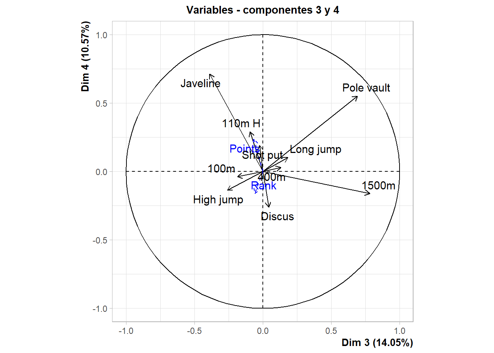
Nota
- Las variables cercanas unas a otras están positivamente correlacionadas.
- Variables opuestas en un mismo eje tienen correlación negativa.
- La distancia al origen indica la importancia en esas componentes (cos2 alto).
4.8 Individuos: coordenadas, cos2 y contribuciones
# Coordenadas de los individuos
head(res$ind$coord) Dim.1 Dim.2 Dim.3 Dim.4 Dim.5
Sebrle 4.0384485 1.36582606 -0.2899565 1.9411341 0.3769545
Clay 3.9193652 0.83696136 0.2311753 1.4939721 -1.0376085
Karpov 4.6199873 0.03999523 -0.0415858 -1.3135257 0.1877295
Macey 2.2334606 1.04176620 -1.8643620 -0.7432135 0.9772701
Warners 2.1683964 -1.80320025 0.8510173 -0.2845996 -0.1513946
Zsivoczky 0.9251322 1.16865180 -1.4774803 0.8075947 0.8729726# Calidad de representación
head(res$ind$cos2) Dim.1 Dim.2 Dim.3 Dim.4 Dim.5
Sebrle 0.6954102 7.954314e-02 0.0035849052 0.160665653 0.006058846
Clay 0.7112052 3.243204e-02 0.0024742661 0.103335239 0.049846023
Karpov 0.8517553 6.383365e-05 0.0000690118 0.068851025 0.001406366
Macey 0.4230486 9.203950e-02 0.2947774222 0.046844751 0.080995884
Warners 0.5299437 3.664716e-01 0.0816261239 0.009128951 0.002583291
Zsivoczky 0.1299979 2.074432e-01 0.3315677581 0.099063996 0.115752425# Contribuciones
head(res$ind$contrib) Dim.1 Dim.2 Dim.3 Dim.4 Dim.5
Sebrle 12.1575058 2.619234357 0.145959136 8.6958838 0.50611259
Clay 11.4510904 0.983545343 0.092778749 5.1509536 3.83474272
Karpov 15.9109806 0.002245949 0.003002311 3.9818030 0.12552619
Macey 3.7185358 1.523786399 6.034288443 1.2747642 3.40171873
Warners 3.5050382 4.565322740 1.257310032 0.1869266 0.08163758
Zsivoczky 0.6380034 1.917581489 3.789736079 1.5051840 2.714378294.8.1 Gráfico de individuos
# Sin mostrar las variables cualitativas
plot(res, cex = 0.8, invisible = "quali",
title = "Individuos - PCA Decathlon")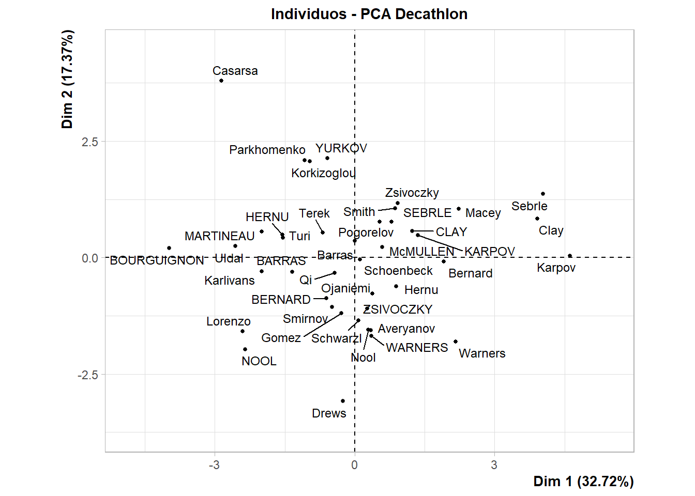
# Coloreando por competición (columna 13)
plot(res, cex = 0.8, habillage = 13,
title = "Individuos por tipo de competición")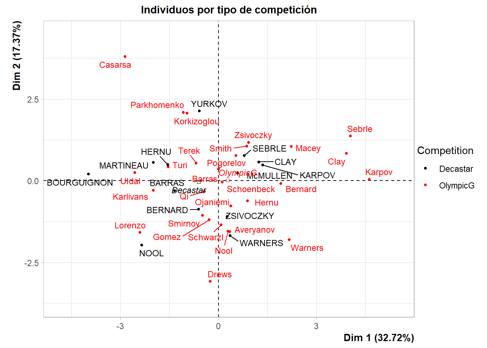
4.8.2 Elipses de confianza por categoría
plotellipses(res)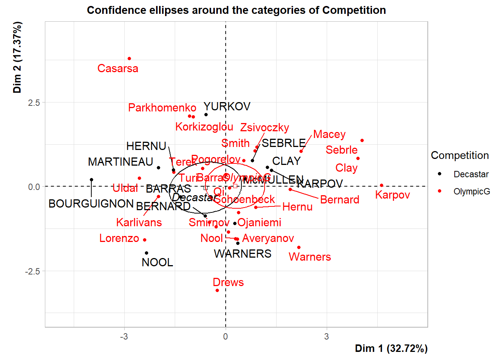
4.8.3 Otras vistas y selección de individuos
# Dimensiones 3 y 4
plot(res, choix = "ind", cex = 0.8, habillage = 13,
title = "Individuos (dim 3 y 4)", axes = 3:4)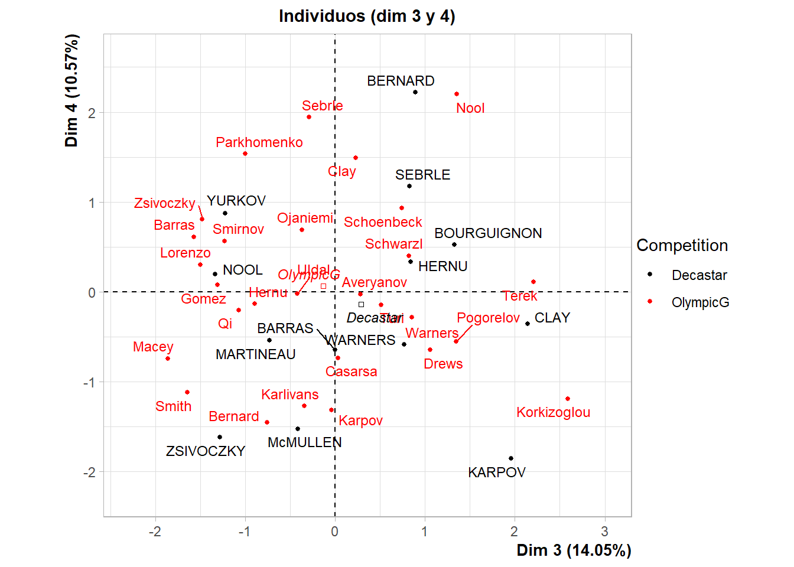
# Seleccionar individuos bien representados
plot(res, cex = 0.8, habillage = 13, select = "cos2 0.7")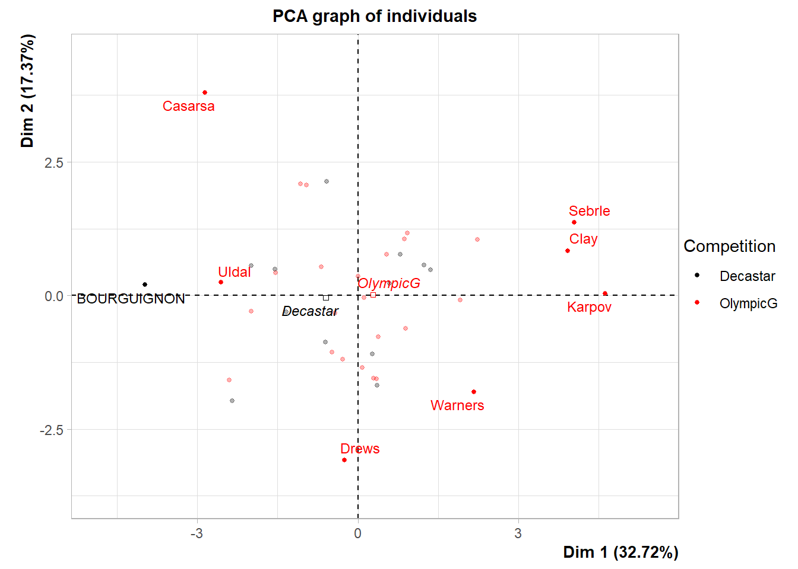
# Seleccionar individuos con mayor contribución
plot(res, cex = 0.8, habillage = 13, select = "contrib 5")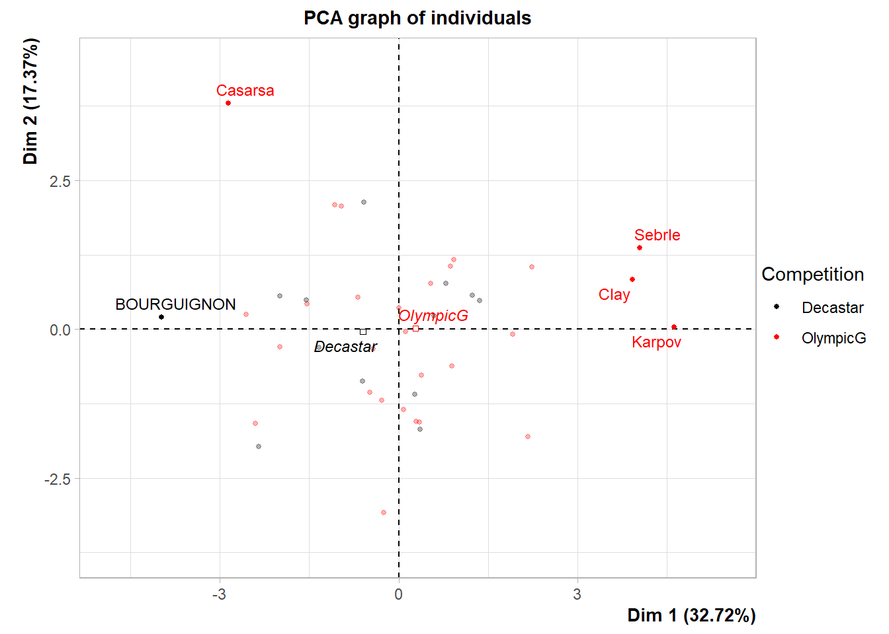
# Seleccionar individuos específicos (por nombre)
plot(res, cex = 0.8, habillage = 13,
select = c("Clay", "Karpov"))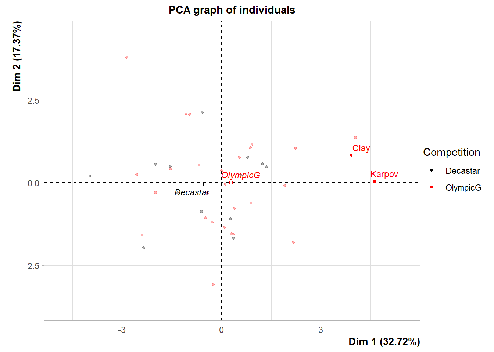
4.8.4 Selección de variables importantes
plot(res, choix = "var", select = "contrib 5")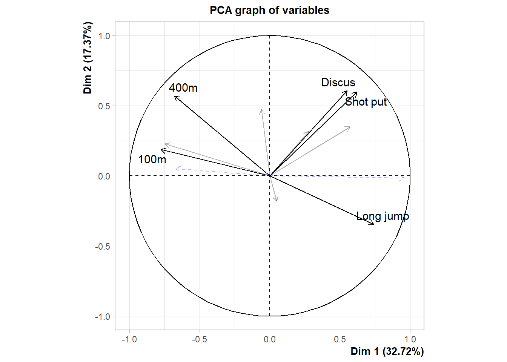
4.8.5 Gráfico con varios argumentos
plot(
res,
cex = 0.8,
habillage = 13,
select = "cos2 0.7",
title = "Decathlon",
cex.main = 1.1,
cex.axis = 0.9,
shadow = TRUE,
auto = "y"
)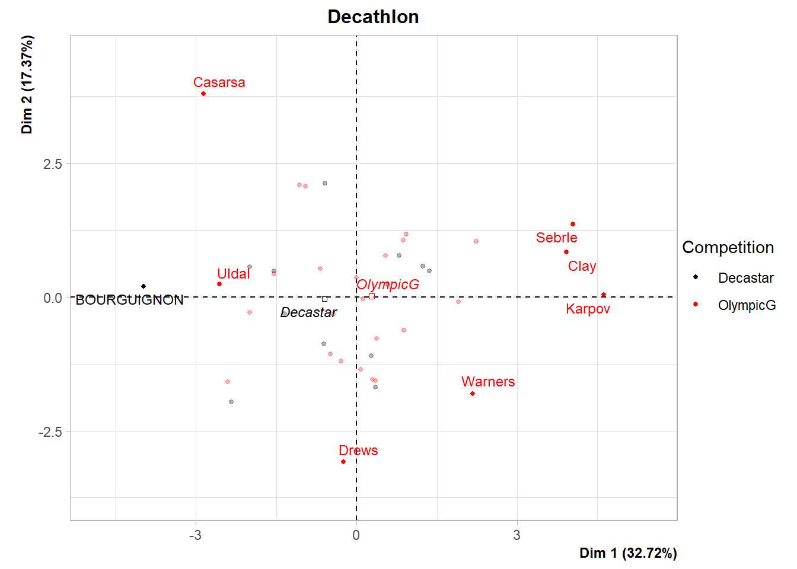
5 Parte 2: PCA con datos de jugos de naranja (orange)
En el segundo bloque analizamos una base de datos de jugos de naranja:
- Columnas 1 a 14: variables cuantitativas (por ejemplo, atributos químicos/sensoriales).
- Columnas 15 y 16: variables cualitativas suplementarias (por ejemplo, origen, tipo de marca, etc.).
5.1 Importar datos de orange
archivo_orange <- file.path(ruta_datos, "orange.csv")
orange <- read.table(
archivo_orange,
header = TRUE,
sep = ";",
dec = ".",
row.names = 1,
check.names = FALSE
)
summary(orange) Odour intensity Odour typicality Pulpiness Intensity of taste
Min. :2.760 Min. :2.530 Min. :1.660 Min. :3.120
1st Qu.:2.775 1st Qu.:2.625 1st Qu.:1.722 1st Qu.:3.265
Median :2.825 Median :2.775 Median :2.625 Median :3.410
Mean :2.907 Mean :2.762 Mean :2.710 Mean :3.362
3rd Qu.:3.010 3rd Qu.:2.865 3rd Qu.:3.603 3rd Qu.:3.458
Max. :3.200 Max. :3.020 Max. :4.000 Max. :3.540
Acidity Bitterness Sweetness Glucose
Min. :2.330 Min. :1.760 Min. :2.600 Min. :17.33
1st Qu.:2.453 1st Qu.:1.998 1st Qu.:2.825 1st Qu.:22.94
Median :2.800 Median :2.320 Median :3.110 Median :24.48
Mean :2.802 Mean :2.328 Mean :3.057 Mean :24.76
3rd Qu.:3.125 3rd Qu.:2.612 3rd Qu.:3.335 3rd Qu.:26.70
Max. :3.310 Max. :2.970 Max. :3.380 Max. :32.42
Fructose Saccharose Sweetening power pH
Min. :20.00 Min. :22.92 Min. : 82.55 Min. :3.590
1st Qu.:25.40 1st Qu.:37.07 1st Qu.: 90.14 1st Qu.:3.620
Median :26.50 Median :41.55 Median : 92.79 Median :3.750
Mean :27.06 Mean :40.06 Mean : 92.80 Mean :3.738
3rd Qu.:28.95 3rd Qu.:45.39 3rd Qu.: 96.10 3rd Qu.:3.842
Max. :34.54 Max. :52.12 Max. :102.22 Max. :3.890
Citric acid Vitamin C Way of preserving Origin
Min. :0.6700 Min. :27.00 Length:6 Length:6
1st Qu.:0.6950 1st Qu.:33.67 Class :character Class :character
Median :0.7250 Median :36.80 Mode :character Mode :character
Mean :0.7667 Mean :36.04
3rd Qu.:0.8150 3rd Qu.:38.88
Max. :0.9500 Max. :43.44 5.2 PCA con variables activas (1 a 14)
res <- PCA(orange[, 1:14], ncp = 3)
summary(res)
Call:
PCA(X = orange[, 1:14], ncp = 3)
Eigenvalues
Dim.1 Dim.2 Dim.3 Dim.4 Dim.5
Variance 8.065 2.583 1.461 1.011 0.880
% of var. 57.607 18.450 10.438 7.220 6.285
Cumulative % of var. 57.607 76.057 86.496 93.715 100.000
Individuals
Dist Dim.1 ctr cos2 Dim.2 ctr cos2
Pampryl amb. | 3.700 | -3.090 19.727 0.697 | -1.026 6.797 0.077 |
Tropicana amb. | 3.885 | 2.358 11.486 0.368 | -2.825 51.491 0.529 |
Fruvita fr. | 3.536 | 2.688 14.928 0.578 | 1.385 12.373 0.153 |
Joker amb. | 4.300 | -3.895 31.359 0.821 | -0.127 0.104 0.001 |
Tropicana fr. | 3.800 | 3.092 19.757 0.662 | 0.533 1.830 0.020 |
Pampryl fr. | 3.128 | -1.152 2.743 0.136 | 2.061 27.405 0.434 |
Dim.3 ctr cos2
Pampryl amb. 0.022 0.006 0.000 |
Tropicana amb. -1.076 13.205 0.077 |
Fruvita fr. -0.076 0.067 0.000 |
Joker amb. 1.184 15.976 0.076 |
Tropicana fr. 1.734 34.298 0.208 |
Pampryl fr. -1.788 36.449 0.327 |
Variables (the 10 first)
Dim.1 ctr cos2 Dim.2 ctr cos2 Dim.3
Odour intensity | 0.352 1.533 0.124 | 0.561 12.192 0.315 | 0.168
Odour typicality | 0.938 10.898 0.879 | 0.205 1.626 0.042 | 0.185
Pulpiness | 0.666 5.498 0.443 | 0.742 21.330 0.551 | 0.010
Intensity of taste | -0.554 3.800 0.306 | 0.453 7.954 0.205 | -0.564
Acidity | -0.878 9.560 0.771 | 0.160 0.995 0.026 | -0.407
Bitterness | -0.897 9.978 0.805 | -0.084 0.274 0.007 | -0.183
Sweetness | 0.958 11.384 0.918 | 0.011 0.005 0.000 | 0.068
Glucose | -0.786 7.652 0.617 | 0.493 9.424 0.243 | 0.280
Fructose | -0.781 7.554 0.609 | 0.489 9.251 0.239 | 0.288
Saccharose | 0.891 9.841 0.794 | 0.133 0.689 0.018 | -0.207
ctr cos2
Odour intensity 1.936 0.028 |
Odour typicality 2.336 0.034 |
Pulpiness 0.006 0.000 |
Intensity of taste 21.785 0.318 |
Acidity 11.316 0.165 |
Bitterness 2.301 0.034 |
Sweetness 0.315 0.005 |
Glucose 5.376 0.079 |
Fructose 5.683 0.083 |
Saccharose 2.925 0.043 |print(res)**Results for the Principal Component Analysis (PCA)**
The analysis was performed on 6 individuals, described by 14 variables
*The results are available in the following objects:
name description
1 "$eig" "eigenvalues"
2 "$var" "results for the variables"
3 "$var$coord" "coord. for the variables"
4 "$var$cor" "correlations variables - dimensions"
5 "$var$cos2" "cos2 for the variables"
6 "$var$contrib" "contributions of the variables"
7 "$ind" "results for the individuals"
8 "$ind$coord" "coord. for the individuals"
9 "$ind$cos2" "cos2 for the individuals"
10 "$ind$contrib" "contributions of the individuals"
11 "$call" "summary statistics"
12 "$call$centre" "mean of the variables"
13 "$call$ecart.type" "standard error of the variables"
14 "$call$row.w" "weights for the individuals"
15 "$call$col.w" "weights for the variables" 5.3 PCA con variables suplementarias
Consideramos ahora que las columnas 15 y 16 son cualitativas suplementarias (por ejemplo, origen del jugo).
res2 <- PCA(orange, quali.sup = 15:16)
summary(res2, nbelements = Inf)
Call:
PCA(X = orange, quali.sup = 15:16)
Eigenvalues
Dim.1 Dim.2 Dim.3 Dim.4 Dim.5
Variance 8.065 2.583 1.461 1.011 0.880
% of var. 57.607 18.450 10.438 7.220 6.285
Cumulative % of var. 57.607 76.057 86.496 93.715 100.000
Individuals
Dist Dim.1 ctr cos2 Dim.2 ctr cos2
Pampryl amb. | 3.700 | -3.090 19.727 0.697 | -1.026 6.797 0.077 |
Tropicana amb. | 3.885 | 2.358 11.486 0.368 | -2.825 51.491 0.529 |
Fruvita fr. | 3.536 | 2.688 14.928 0.578 | 1.385 12.373 0.153 |
Joker amb. | 4.300 | -3.895 31.359 0.821 | -0.127 0.104 0.001 |
Tropicana fr. | 3.800 | 3.092 19.757 0.662 | 0.533 1.830 0.020 |
Pampryl fr. | 3.128 | -1.152 2.743 0.136 | 2.061 27.405 0.434 |
Dim.3 ctr cos2
Pampryl amb. 0.022 0.006 0.000 |
Tropicana amb. -1.076 13.205 0.077 |
Fruvita fr. -0.076 0.067 0.000 |
Joker amb. 1.184 15.976 0.076 |
Tropicana fr. 1.734 34.298 0.208 |
Pampryl fr. -1.788 36.449 0.327 |
Variables
Dim.1 ctr cos2 Dim.2 ctr cos2 Dim.3
Odour intensity | 0.352 1.533 0.124 | 0.561 12.192 0.315 | 0.168
Odour typicality | 0.938 10.898 0.879 | 0.205 1.626 0.042 | 0.185
Pulpiness | 0.666 5.498 0.443 | 0.742 21.330 0.551 | 0.010
Intensity of taste | -0.554 3.800 0.306 | 0.453 7.954 0.205 | -0.564
Acidity | -0.878 9.560 0.771 | 0.160 0.995 0.026 | -0.407
Bitterness | -0.897 9.978 0.805 | -0.084 0.274 0.007 | -0.183
Sweetness | 0.958 11.384 0.918 | 0.011 0.005 0.000 | 0.068
Glucose | -0.786 7.652 0.617 | 0.493 9.424 0.243 | 0.280
Fructose | -0.781 7.554 0.609 | 0.489 9.251 0.239 | 0.288
Saccharose | 0.891 9.841 0.794 | 0.133 0.689 0.018 | -0.207
Sweetening power | 0.194 0.467 0.038 | 0.915 32.396 0.837 | 0.107
pH | 0.964 11.525 0.930 | -0.156 0.941 0.024 | -0.107
Citric acid | -0.906 10.173 0.820 | -0.018 0.012 0.000 | 0.389
Vitamin C | -0.105 0.136 0.011 | -0.274 2.910 0.075 | 0.706
ctr cos2
Odour intensity 1.936 0.028 |
Odour typicality 2.336 0.034 |
Pulpiness 0.006 0.000 |
Intensity of taste 21.785 0.318 |
Acidity 11.316 0.165 |
Bitterness 2.301 0.034 |
Sweetness 0.315 0.005 |
Glucose 5.376 0.079 |
Fructose 5.683 0.083 |
Saccharose 2.925 0.043 |
Sweetening power 0.778 0.011 |
pH 0.776 0.011 |
Citric acid 10.368 0.152 |
Vitamin C 34.099 0.498 |
Supplementary categories
Dist Dim.1 cos2 v.test Dim.2 cos2 v.test
Ambient | 2.040 | -1.543 0.572 -1.215 | -1.326 0.423 -1.845 |
Fresh | 2.040 | 1.543 0.572 1.215 | 1.326 0.423 1.845 |
Florida | 2.741 | 2.712 0.979 2.136 | -0.303 0.012 -0.421 |
Other | 2.741 | -2.712 0.979 -2.136 | 0.303 0.012 0.421 |
Dim.3 cos2 v.test
Ambient 0.043 0.000 0.080 |
Fresh -0.043 0.000 -0.080 |
Florida 0.194 0.005 0.359 |
Other -0.194 0.005 -0.359 |5.4 Valores propios y varianza explicada
eigenvalues <- res$eig
eigenvalues[, 1:3] eigenvalue percentage of variance cumulative percentage of variance
comp 1 8.0649505 57.606789 57.60679
comp 2 2.5830341 18.450244 76.05703
comp 3 1.4613887 10.438490 86.49552
comp 4 1.0107601 7.219715 93.71524
comp 5 0.8798667 6.284762 100.000005.5 Test de Bartlett y KMO para orange
bartlett.test(orange[, 1:14])
Bartlett test of homogeneity of variances
data: orange[, 1:14]
Bartlett's K-squared = 210.49, df = 13, p-value < 2.2e-16KMO(orange[, 1:14])Error in solve.default(r) :
sistema es computacionalmente singular: número de condición recíproco = 1.37813e-18Kaiser-Meyer-Olkin factor adequacy
Call: KMO(r = orange[, 1:14])
Overall MSA = 0.5
MSA for each item =
Odour intensity Odour typicality Pulpiness Intensity of taste
0.5 0.5 0.5 0.5
Acidity Bitterness Sweetness Glucose
0.5 0.5 0.5 0.5
Fructose Saccharose Sweetening power pH
0.5 0.5 0.5 0.5
Citric acid Vitamin C
0.5 0.5 5.6 Descripción de las dimensiones
dimdesc(res)$Dim.1
Link between the variable and the continuous variables (R-square)
=================================================================================
correlation p.value
pH 0.9641128 0.001908728
Sweetness 0.9581672 0.002588371
Odour typicality 0.9375068 0.005736073
Saccharose 0.8908878 0.017208699
Acidity -0.8780844 0.021389085
Bitterness -0.8970717 0.015346133
Citric acid -0.9057713 0.012900241
$Dim.2
Link between the variable and the continuous variables (R-square)
=================================================================================
correlation p.value
Sweetening power 0.9147625 0.0105885
$Dim.3dimdesc(res, axes = c(1, 2))$Dim.1
Link between the variable and the continuous variables (R-square)
=================================================================================
correlation p.value
pH 0.9641128 0.001908728
Sweetness 0.9581672 0.002588371
Odour typicality 0.9375068 0.005736073
Saccharose 0.8908878 0.017208699
Acidity -0.8780844 0.021389085
Bitterness -0.8970717 0.015346133
Citric acid -0.9057713 0.012900241
$Dim.2
Link between the variable and the continuous variables (R-square)
=================================================================================
correlation p.value
Sweetening power 0.9147625 0.0105885dimdesc(res, proba = 0.2)$Dim.1
Link between the variable and the continuous variables (R-square)
=================================================================================
correlation p.value
pH 0.9641128 0.001908728
Sweetness 0.9581672 0.002588371
Odour typicality 0.9375068 0.005736073
Saccharose 0.8908878 0.017208699
Pulpiness 0.6659126 0.148777121
Fructose -0.7805085 0.066977593
Glucose -0.7856011 0.064022682
Acidity -0.8780844 0.021389085
Bitterness -0.8970717 0.015346133
Citric acid -0.9057713 0.012900241
$Dim.2
Link between the variable and the continuous variables (R-square)
=================================================================================
correlation p.value
Sweetening power 0.9147625 0.01058850
Pulpiness 0.7422675 0.09107899
$Dim.3
Link between the variable and the continuous variables (R-square)
=================================================================================
correlation p.value
Vitamin C 0.7059171 0.11701035.7 Gráficos de individuos y variables
5.7.1 Individuos
# Individuos sin variables cualitativas
plot(res, cex = 0.8, invisible = "quali",
title = "Individuos - PCA Orange")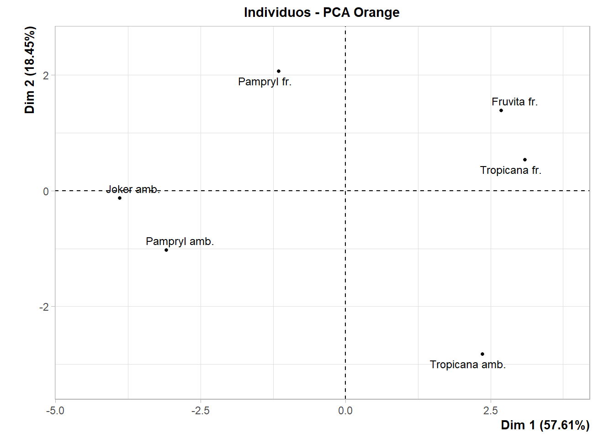
# Coloreados según variable de origen (si existe en el dataset)
plot(res2, cex = 0.8, habillage = "Origin")
5.7.2 Elipses de confianza
plotellipses(res)NULL5.7.3 Selección de individuos y variables
# Individuos bien representados
plot(res, cex = 0.8, habillage = 13, select = "cos2 0.7")
# Individuos con mayor contribución
plot(res, cex = 0.8, habillage = 13, select = "contrib 5")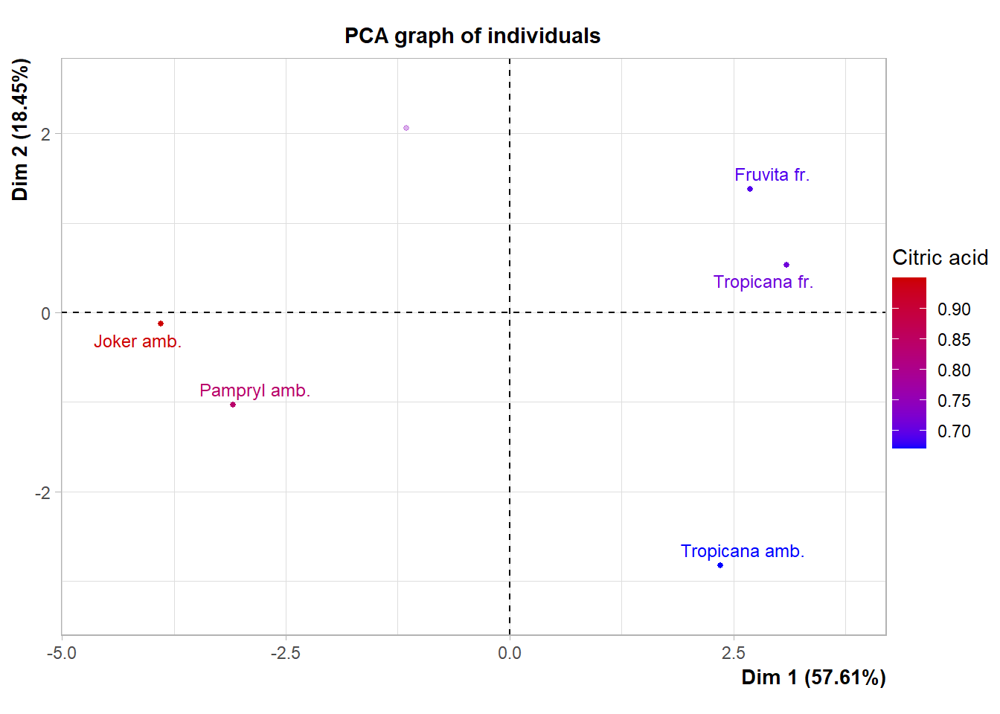
# Individuos específicos (ejemplo: marcas específicas)
plot(res, cex = 0.8, habillage = 13,
select = c("Fruvita fr.", "Tropicana fr."))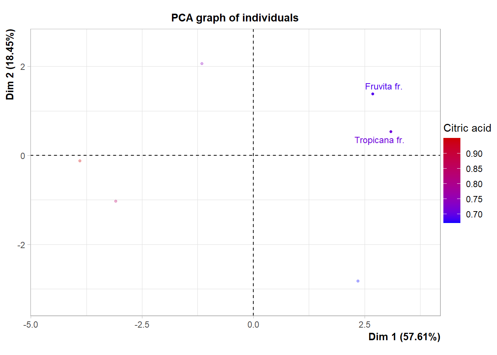
# Variables que más contribuyen
plot(res, choix = "var", select = "contrib 5")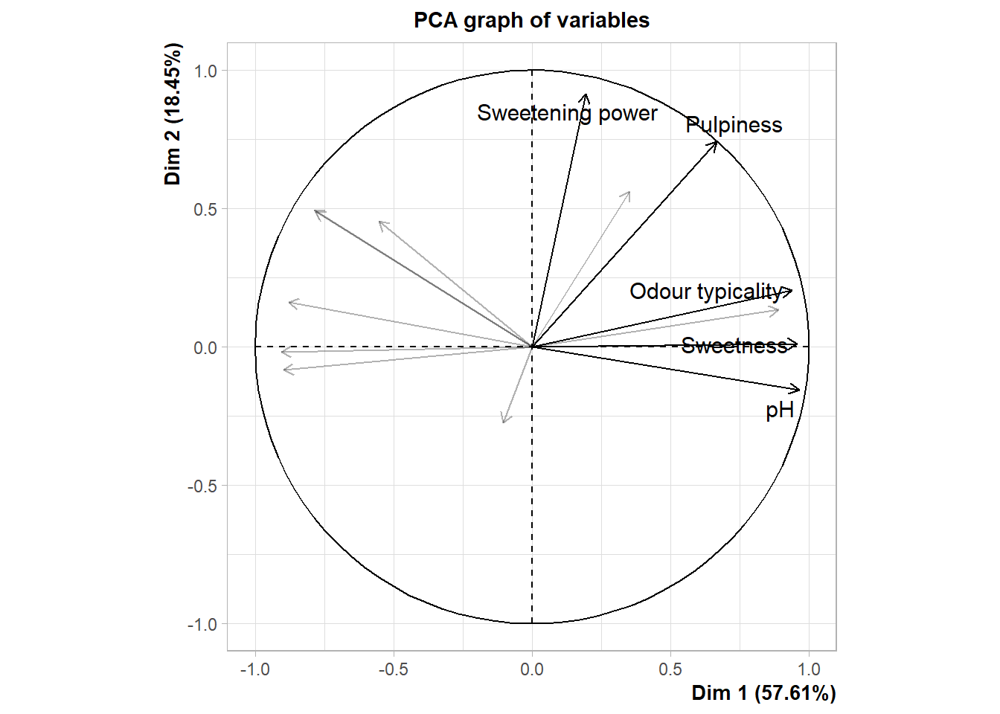
5.7.4 Gráfico combinado (orange)
plot(
res,
cex = 0.8,
habillage = 13,
select = "cos2 0.7",
title = "Orange juices PCA",
cex.main = 1.1,
cex.axis = 0.9,
shadow = TRUE,
auto = "y"
)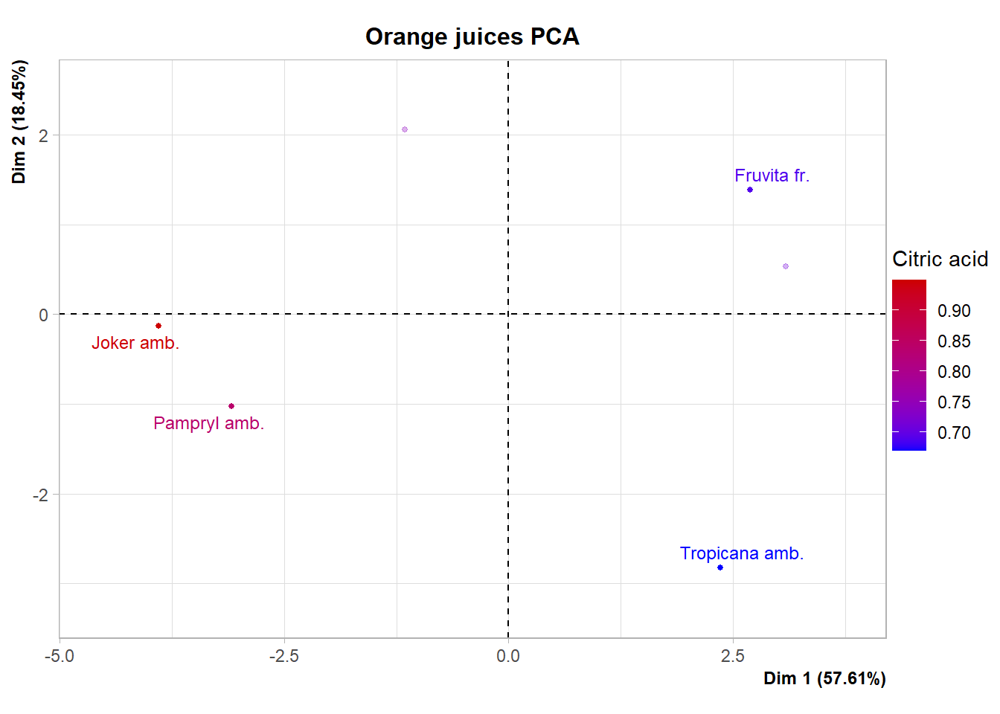
6 Cierre del laboratorio
En este laboratorio:
Aplicaste PCA a dos conjuntos de datos reales (Decathlon y jugos de naranja).
Revisaste la idoneidad del análisis mediante Bartlett y KMO.
Interpretaste valores propios, varianza explicada y elegiste cuántas componentes retener.
Analizaste:
- Cargas de las variables (coordenadas y cos2).
- Contribuciones de variables e individuos.
- Gráficos de individuos por grupos, con elipses de confianza.
- Variables e individuos “más importantes” (por contribución o calidad de representación).
- Cargas de las variables (coordenadas y cos2).
Estos elementos son fundamentales para:
- Reducir dimensionalidad en bases con muchas variables.
- Explorar estructuras latentes antes de aplicar otros métodos (clustering, regresión, etc.).
- Construir indicadores sintéticos a partir de múltiples variables observadas.